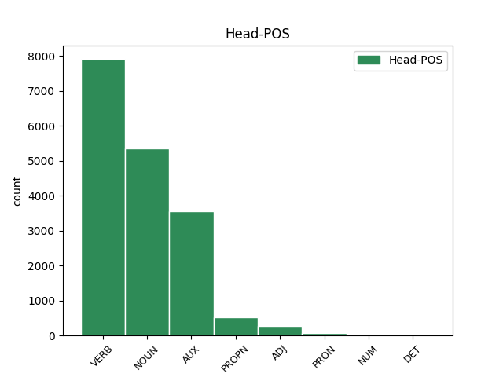

Distribution of features within this leaf

Agreement Rules sorted by frequency.
- When the dependent token is the subject(subj) of the head token,
1 Żółty _ _ _ _ 0 _ _ _
2 krawat krawat NOUN subst:sg:nom:m3 Case=Nom|Gender=Masc|Number=Sing|SubGender=Masc3 5 subj _ _
3 tylko _ _ _ _ 0 _ _ _
4 mu _ _ _ _ 0 _ _ _
5 fruwa fruwać VERB fin:sg:ter:imperf Aspect=Imp|Mood=Ind|Number=Sing|Person=3|Tense=Pres|VerbForm=Fin|Voice=Act 0 _ _ _
6 na _ _ _ _ 0 _ _ _
7 wietrze _ _ _ _ 0 _ _ _
8 , _ _ _ _ 0 _ _ _
9 kurtka _ _ _ _ 0 _ _ _
10 rozpięta _ _ _ _ 0 _ _ _
11 . _ _ _ _ 0 _ _ _
1 Żywię _ _ _ _ 0 _ _ _
2 nadzieję _ _ _ _ 0 _ _ _
3 na _ _ _ _ 0 _ _ _
4 Waszą wasz DET adj:sg:acc:f:pos Case=Acc|Gender=Fem|Number=Sing|Number[psor]=Plur|Person=2|Poss=Yes|PronType=Prs 5 det _ _
5 pomoc pomoc NOUN subst:sg:acc:f Case=Acc|Gender=Fem|Number=Sing 0 _ _ _
6 . _ _ _ _ 0 _ _ _
1 - _ _ _ _ 0 _ _ _
2 " _ _ _ _ 0 _ _ _
3 Żywią żywić VERB fin:pl:ter:imperf Aspect=Imp|Mood=Ind|Number=Plur|Person=3|Tense=Pres|VerbForm=Fin|Voice=Act 0 _ _ _
4 i _ _ _ _ 0 _ _ _
5 bronią bronić VERB fin:pl:ter:imperf Aspect=Imp|Mood=Ind|Number=Plur|Person=3|Tense=Pres|VerbForm=Fin|Voice=Act 3 conj _ SpaceAfter=No
6 " _ _ _ _ 0 _ _ _
7 . _ _ _ _ 0 _ _ _
1 Żywiła żywić VERB praet:sg:f:imperf Aspect=Imp|Gender=Fem|Mood=Ind|Number=Sing|Tense=Past|VerbForm=Fin|Voice=Act 2 comp:aux@aglt _ SpaceAfter=No
2 m być AUX aglt:sg:pri:imperf:nwok Aspect=Imp|Number=Sing|Person=1|Variant=Short 0 _ _ _
3 tym _ _ _ _ 0 _ _ _
4 Dominikę _ _ _ _ 0 _ _ _
5 . _ _ _ _ 0 _ _ _
1 Żona żona NOUN subst:sg:nom:f Case=Nom|Gender=Fem|Number=Sing 0 _ _ _
2 kamienicznika kamienicznik NOUN subst:sg:gen:m1 Case=Gen|Gender=Masc|Number=Sing|SubGender=Masc1 1 mod@poss _ _
3 prowadziła _ _ _ _ 0 _ _ _
4 sklep _ _ _ _ 0 _ _ _
5 z _ _ _ _ 0 _ _ _
6 żyrandolami _ _ _ _ 0 _ _ _
7 i _ _ _ _ 0 _ _ _
8 żarówkami _ _ _ _ 0 _ _ _
9 . _ _ _ _ 0 _ _ _
1 Że _ _ _ _ 0 _ _ _
2 była _ _ _ _ 0 _ _ _
3 u _ _ _ _ 0 _ _ _
4 niego _ _ _ _ 0 _ _ _
5 niejaka _ _ _ _ 0 _ _ _
6 pani pani NOUN subst:sg:nom:f Case=Nom|Gender=Fem|Number=Sing 0 _ _ _
7 Ewa Ewa PROPN subst:sg:nom:f Case=Nom|Gender=Fem|Number=Sing 6 flat _ SpaceAfter=No
8 . _ _ _ _ 0 _ _ _
1 – _ _ _ _ 0 _ _ _
2 żywotność _ _ _ _ 0 _ _ _
3 jest być AUX fin:sg:ter:imperf Aspect=Imp|Mood=Ind|Number=Sing|Person=3|Tense=Pres|VerbForm=Fin|Voice=Act 0 _ _ _
4 większa duży ADJ adj:sg:nom:f:com Case=Nom|Degree=Cmp|Gender=Fem|Number=Sing 3 comp:pred _ SpaceAfter=No
5 . _ _ _ _ 0 _ _ _
6 . _ _ _ _ 0 _ _ _
1 Świat _ _ _ _ 0 _ _ _
2 nie _ _ _ _ 0 _ _ _
3 jest być AUX fin:sg:ter:imperf Aspect=Imp|Mood=Ind|Number=Sing|Person=3|Tense=Pres|VerbForm=Fin|Voice=Act 0 _ _ _
4 na _ _ _ _ 0 _ _ _
5 nią _ _ _ _ 0 _ _ _
6 przygotowany przygotować ADJ ppas:sg:nom:m3:perf:aff Aspect=Perf|Case=Nom|Gender=Masc|Number=Sing|Polarity=Pos|SubGender=Masc3|VerbForm=Part|Voice=Pass 3 comp:aux@pass _ _
7 psychicznie _ _ _ _ 0 _ _ _
8 . _ _ _ _ 0 _ _ _
1 Świat świat NOUN subst:sg:nom:m3 Case=Nom|Gender=Masc|Number=Sing|SubGender=Masc3 3 subj@pass _ _
2 nie _ _ _ _ 0 _ _ _
3 jest być AUX fin:sg:ter:imperf Aspect=Imp|Mood=Ind|Number=Sing|Person=3|Tense=Pres|VerbForm=Fin|Voice=Act 0 _ _ _
4 na _ _ _ _ 0 _ _ _
5 nią _ _ _ _ 0 _ _ _
6 przygotowany _ _ _ _ 0 _ _ _
7 psychicznie _ _ _ _ 0 _ _ _
8 . _ _ _ _ 0 _ _ _
1 – _ _ _ _ 0 _ _ _
2 żeby _ _ _ _ 0 _ _ _
3 zmienić _ _ _ _ 0 _ _ _
4 trochę _ _ _ _ 0 _ _ _
5 trybiki _ _ _ _ 0 _ _ _
6 w _ _ _ _ 0 _ _ _
7 tej _ _ _ _ 0 _ _ _
8 ma _ _ _ _ 0 _ _ _
9 w _ _ _ _ 0 _ _ _
10 tej _ _ _ _ 0 _ _ _
11 ma machina NOUN subst:sg:loc:f Case=Loc|Gender=Fem|Number=Sing 0 _ _ _
12 machinie machina NOUN subst:sg:loc:f Case=Loc|Gender=Fem|Number=Sing 11 appos _ SpaceAfter=No
13 . _ _ _ _ 0 _ _ _
1 - _ _ _ _ 0 _ _ _
2 Żyj żyć VERB impt:sg:sec:imperf Aspect=Imp|Mood=Imp|Number=Sing|Person=2|VerbForm=Fin|Voice=Act 0 _ _ _
3 wiecznie _ _ _ _ 0 _ _ _
4 , _ _ _ _ 0 _ _ _
5 panie pan NOUN subst:sg:voc:m1 Case=Voc|Gender=Masc|Number=Sing|SubGender=Masc1 2 vocative _ _
6 nasz _ _ _ _ 0 _ _ _
7 . _ _ _ _ 0 _ _ _
1 - _ _ _ _ 0 _ _ _
2 Zobaczymy _ _ _ _ 0 _ _ _
3 , _ _ _ _ 0 _ _ _
4 czy _ _ _ _ 0 _ _ _
5 RS _ _ _ _ 0 _ _ _
6 AWS _ _ _ _ 0 _ _ _
7 będzie być AUX bedzie:sg:ter:imperf Aspect=Imp|Mood=Ind|Number=Sing|Person=3|Tense=Fut|VerbForm=Fin 0 _ _ _
8 już _ _ _ _ 0 _ _ _
9 mógł móc VERB praet:sg:m3:imperf:nagl Agglutination=Nagl|Aspect=Imp|Gender=Masc|Mood=Ind|Number=Sing|SubGender=Masc3|Tense=Past|VerbForm=Fin|Voice=Act 7 comp:aux _ _
10 samodzielnie _ _ _ _ 0 _ _ _
11 działać _ _ _ _ 0 _ _ _
12 . _ _ _ _ 0 _ _ _
1 Żyje _ _ _ _ 0 _ _ _
2 dzięki _ _ _ _ 0 _ _ _
3 komuś ktoś PRON subst:sg:dat:m1 Case=Dat|Gender=Masc|Number=Sing|PronType=Ind|SubGender=Masc1 0 _ _ _
4 , _ _ _ _ 0 _ _ _
5 kto _ _ _ _ 0 _ _ _
6 rozumiał rozumieć VERB praet:sg:m1:imperf Aspect=Imp|Gender=Masc|Mood=Ind|Number=Sing|SubGender=Masc1|Tense=Past|VerbForm=Fin|Voice=Act 3 mod@relcl _ _
7 to _ _ _ _ 0 _ _ _
8 hasło _ _ _ _ 0 _ _ _
9 . _ _ _ _ 0 _ _ _
Disagree Examples:
1 102 _ _ _ _ 0 _ _ _
2 lata _ _ _ _ 0 _ _ _
3 obchodziła _ _ _ _ 0 _ _ _
4 wczoraj _ _ _ _ 0 _ _ _
5 Stanisława _ _ _ _ 0 _ _ _
6 Przybyła _ _ _ _ 0 _ _ _
7 , _ _ _ _ 0 _ _ _
8 rodowita _ _ _ _ 0 _ _ _
9 mieszkanka mieszkanka NOUN subst:sg:nom:f Case=Nom|Gender=Fem|Number=Sing 0 _ _ _
10 Łaz Łazy PROPN subst:pl:gen:n Case=Gen|Gender=Neut|Number=Plur 9 mod@poss _ SpaceAfter=No
11 . _ _ _ _ 0 _ _ _
1 200 200 NUM num:pl:acc:n:rec Case=Acc|Gender=Neut|Number=Plur|NumType=Card 5 subj@pass _ DepType=Rec
2 z _ _ _ _ 0 _ _ _
3 nich _ _ _ _ 0 _ _ _
4 chronionych _ _ _ _ 0 _ _ _
5 jest być AUX fin:sg:ter:imperf Aspect=Imp|Mood=Ind|Number=Sing|Person=3|Tense=Pres|VerbForm=Fin|Voice=Act 0 _ _ _
6 jako _ _ _ _ 0 _ _ _
7 zabytki _ _ _ _ 0 _ _ _
8 architektury _ _ _ _ 0 _ _ _
9 ogrodniczej _ _ _ _ 0 _ _ _
10 . _ _ _ _ 0 _ _ _
1 200 _ _ _ _ 0 _ _ _
2 z _ _ _ _ 0 _ _ _
3 nich _ _ _ _ 0 _ _ _
4 chronionych chronić ADJ ppas:pl:gen:n:imperf:aff Aspect=Imp|Case=Gen|Gender=Neut|Number=Plur|Polarity=Pos|VerbForm=Part|Voice=Pass 5 comp:aux@pass _ _
5 jest być AUX fin:sg:ter:imperf Aspect=Imp|Mood=Ind|Number=Sing|Person=3|Tense=Pres|VerbForm=Fin|Voice=Act 0 _ _ _
6 jako _ _ _ _ 0 _ _ _
7 zabytki _ _ _ _ 0 _ _ _
8 architektury _ _ _ _ 0 _ _ _
9 ogrodniczej _ _ _ _ 0 _ _ _
10 . _ _ _ _ 0 _ _ _
1 200 _ _ _ _ 0 _ _ _
2 z _ _ _ _ 0 _ _ _
3 nich _ _ _ _ 0 _ _ _
4 chronionych _ _ _ _ 0 _ _ _
5 jest _ _ _ _ 0 _ _ _
6 jako _ _ _ _ 0 _ _ _
7 zabytki zabytek NOUN subst:pl:nom:m3 Case=Nom|Gender=Masc|Number=Plur|SubGender=Masc3 0 _ _ _
8 architektury architektura NOUN subst:sg:gen:f Case=Gen|Gender=Fem|Number=Sing 7 mod@poss _ _
9 ogrodniczej _ _ _ _ 0 _ _ _
10 . _ _ _ _ 0 _ _ _
1 48 _ _ _ _ 0 _ _ _
2 zakładów zakład NOUN subst:pl:gen:m3 Case=Gen|Gender=Masc|Number=Plur|SubGender=Masc3 7 subj _ _
3 mięsnych _ _ _ _ 0 _ _ _
4 z _ _ _ _ 0 _ _ _
5 całego _ _ _ _ 0 _ _ _
6 kraju _ _ _ _ 0 _ _ _
7 zgłosiło zgłosić VERB praet:sg:n:perf Aspect=Perf|Gender=Neut|Mood=Ind|Number=Sing|Tense=Past|VerbForm=Fin|Voice=Act 0 _ _ _
8 do _ _ _ _ 0 _ _ _
9 konkursu _ _ _ _ 0 _ _ _
10 213 _ _ _ _ 0 _ _ _
11 swoich _ _ _ _ 0 _ _ _
12 produktów _ _ _ _ 0 _ _ _
13 . _ _ _ _ 0 _ _ _